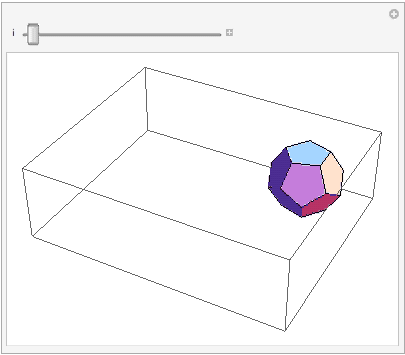

with Christopher Conlon, Richard Pham, and Kyle Sykes.
Preprint from an REU done during summer 2013, intended for use with Mathematica 9.
(Note that the release of Mathematica 10 included Regions, which duplicates much of the functionality of our package.)
Abstract:Return to main page
PolyLink is a library in C# that allows polyhedra to be folded (and unfolded) from within Mathematica. By storing its geometry as a doubly connected edge list, PolyLink enables more intelligent and intuitive operations to be performed on polyhedra, such as unfolding, intersection testing, and shortest paths computation. Mathematica provides an enviroment for sophisticated mathematical computation, and C# simplifies business logic, resulting in a library that can be extended to perform almost any type of geometry computation. Our goal is a more inuitive tool for testing unfoldings on various classes of polyhedra.